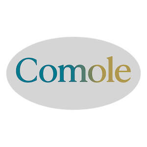

Trade Mark Journal No.2025/043 24 October 2025
UK00004279175 16 October 2025 (3,5)

- Class 3
- Feminine hygiene cleansing towelettes; Cleansers for intimate personal hygiene purposes, non medicated; Sanitary preparations being toiletries; Moist wipes for sanitary and cosmetic purposes; Body cleaning and beauty care preparations; Nappy cream [non-medicated]; Baby wipes; Baby shampoo; Baby lotion; Baby shampoo mousse; Baby suncreams; Baby hair conditioner; Shampoos for babies; Moist wipes impregnated with a cosmetic lotion; Baby lotions; Wipes impregnated with a skin cleanser; Cloths impregnated with a skin cleanser; Baby wipes impregnated with cleaning preparations; Baby bath mousse; Hair moisturisers.
- Class 5
- Feminine hygiene products; Disinfectants for hygiene purposes; Feminine hygiene pads; Wipes impregnated with disinfectants for hygiene purposes; Cleaning cloths impregnated with disinfectant for hygiene purposes; Absorbent articles for personal hygiene; Hygienic lubricants; Disinfectants for hygienic purposes; Disinfectants for sanitary purposes; Disinfectants for sanitary use; Hygienic preparations for veterinary use; Sanitary tampons; Tampons [sanitary]; Sanitary towels; Towels (Sanitary -); Sanitary pads; Disinfecting handwash; Sanitary pants; Pants (Sanitary -); Sanitisers for household use; Nappy changing mats, disposable, for babies; Nappy pants for incontinents; Nappies as baby diapers; Nappy cream [medicated]; Nappies for babies; Baby diapers; Disposable nappies; Cloth diapers; Diapers for babies; Babies' nappies; Incontinence diapers; Diapers for incontinence; Disposable swim diapers for babies; Swim diapers, disposable, for babies; Pants, absorbent, for incontinence; Disposable diapers; Disposable pet diapers; Disposable nappies made of paper for incontinents; Paper diapers; Adult diapers; Disposable sanitising wipes; Sanitising wipes; Babies' swim diapers; Babies' nappies [paper or cellulose]; Infants' diapers [disposable] of paper; Infants' disposable diapers of paper; Disposable liners for babies' diapers; Infants' diapers [disposable] of cellulose; Babies' diapers; Babies' napkins [diapers]; Incontinence pads; Incontinence garments; Disposable diapers for incontinence; Disposable pads for incontinence; Disposable liners for incontinence diapers; Disposable menstruation underwear; Menstruation pads; Menstruation tampons; Sanitary panties; Disposable adult diapers; Sanitary pants for pets; Absorbent diapers of cellulose for pets; Babies' disposable diaper pants of cellulose; Vaginal moisturizers.
LIDACONSULTING LTD